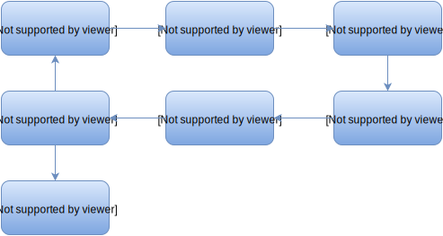

<!doctype html> <html lang="en">
<head>
  <meta charset="utf-8">

  <title>Effective modeling in AMPL</title>

  <meta name="author" content="Victor Zverovich">

  <meta name="apple-mobile-web-app-capable" content="yes" />
  <meta name="apple-mobile-web-app-status-bar-style" content="black-translucent" />

  <meta name="viewport" content="width=device-width, initial-scale=1.0, maximum-scale=1.0, user-scalable=no">

  <link rel="stylesheet" href="../../common/reveal.js/css/reveal.css">
  <link rel="stylesheet" href="../../common/reveal.js/css/theme/beige.css" id="theme">

  <!-- For syntax highlighting -->
  <link rel="stylesheet" href="../../common/reveal.js/lib/css/zenburn.css">

  <!-- If the query includes 'print-pdf', include the PDF print sheet -->
  <script>
    if( window.location.search.match(/print-pdf/gi) ) {
      var link = document.createElement('link');
      link.rel = 'stylesheet';
      link.type = 'text/css';
      link.href = '../../common/reveal.js/css/print/pdf.css';
      document.getElementsByTagName('head')[0].appendChild(link);
    }
  </script>

  <style>
  body {background: white;}
  comment {display: none;}

  .reveal h1 {
    padding-bottom: 50px;
  }
  
  .reveal h1,
  .reveal h2 {
    font-size: 200%;
    text-transform: none;
    text-align: center;
    margin: 0;
  }
  .reveal section:first-of-type {
    text-align: center;
  }
  .reveal section {
    text-align: left;
  }
  
  .reveal p {
    margin-top: 10px;
    margin-bottom: 10px;
  }

  .reveal .MathJax_Display {
    margin-top: 20px;
    margin-bottom: 20px;
  }
  .reveal .plot {
    box-shadow: 0 0 20px #888888;
    margin-left: auto; margin-right: auto;
  }
  
  .reveal .transp-image {
    display: block;
    margin-left: auto;
    margin-right: auto;
    border: none;
    box-shadow: none;
  }
  
  /* Fix nohighlight styles. */
  .reveal pre code { display: block; background: #3F3F3F; color: #DCDCDC; }
  
  /* Fix image styles. */
  .reveal section img { border: none; box-shadow: none; }
  
  img.float-right {
    clear:right;
    float:right;
  }

  div .new { color: red; }

  /* D3 styles */
  .node circle {
    fill: #fff;
    stroke: steelblue;
    stroke-width: 1.5px;
  }

  .node {
    font: 20px sans-serif;
  }

  .link {
    fill: none;
    stroke: #ccc;
    stroke-width: 1.5px;
  }
  
  .chart rect {
    fill: steelblue;
  }

  .chart .bar text {
    fill: white;
    font: 20px sans-serif;
    text-anchor: end;
  }
  .chart .axis text {
    font: 20px sans-serif;
    fill: black;
  }
  .chart .x.axis text {
    font: 16px sans-serif;
  }

  .chart .axis path,
  .chart .axis line {
    fill: none;
    stroke: #000;
    shape-rendering: crispEdges;
  }
  .chart .y.axis line,
  .chart .y.axis path {
    display: none;
  }
  </style>

  <script type="text/javascript" charset="utf-8" src="MathBox.js/vendor/domready.js"></script>
  <script type="text/javascript" charset="utf-8" src="MathBox.js/build/MathBox-bundle.js"></script>

  <link href="MathBox.js/base.css" rel="stylesheet" type="text/css" media="screen">  
</head>

<body>
<script src="../../common/reveal.js/lib/js/head.min.js"></script>
<script src="../../common/reveal.js/js/reveal.js"></script>


<div class="reveal">
<!-- Any section element inside of this container is displayed as a slide -->
<div class="slides">

<section data-markdown data-separator="---">
<script type="text/template">
Effective modeling in AMPL
==========================

Victor Zverovich

<small><a href="mailto:viz@ampl.com">viz@ampl.com</a></small>

AMPL Optimization Inc.

<br>

<small>University of Santiago de Compostela, <br>
January 18-19, 2016, Spain</small>
---

## Outline

* Modeling cycle and model/data separation

* Iterated commands vs loops

* Modifying data dynamically

* Alternative formulations

  * MIP/CP
  * Piecewise-linear terms
  * Semi-continuous and discrete cases
//   
* AMPL script alternatives

* References

---

## Modeling cycle

<div style="text-align: center">

</div>

Modeling languages:

* Rapid prototyping and fast iterations
* Improved reliability and easier maintenance

---

## Spaghetti modeling


* Spaghetti code: tangled control structure, poor modularity

* Same can happen in modeling:

  * Model, data and logic mixed
  * Difficult to maintain and extend

<aside class="notes">
Not to be confused with excellent blog Spaghetti Optimization by Stefano Gualandi stegua.github.io/
</aside>

---

## Model/data separation

AMPL encourages model/data separation:

* 
  High-level declarative modeling language
  
* Expressive data specification language

* Database access functionality

* Scripting/command language that brings model and data together

* AMPL combines model and data building a problem instance
  in the solver form

---

## Advantages of model/data separation

* One model can be used with multiple datasets

* Improves readability and maintainability

* Facilitates testing: model aspects can be verified on small datasets

* Easy to switch between data sources: files, databases, possibly remote

* Data can be reused

---

## Use checks to ensure data consistency

* Range checks:

```cs
param cost {ALL_FOOD} > 0;
```

* More complex checks:

```cs
check{p in PROD}:
  sum{i in ORIG}
    supply[i, p] == sum{j in DEST} demand[j, p];
```

* Run at `solve` or manually with the `check` command.

```cs
check['band'] at line 6 of test.ampl fails:
  check{p in PROD} : sum{i in ORIG} supply[i,p] == \
    sum{j in DEST} demand[j,p];
```

* Take imprecision into account.

---

## Prefer iterated commands to loops

* Many AMPL commands have iterated forms:

  * `read`
  * `display`, `print`, `printf`
  * `fix`, `unfix`

* Example:

```cs
print {s in 1..10}: s;
```

* The same can be expressed with loops

```cs
for {s in 1..10} print s;
```

* Iterated commands are often faster (and shorter).

---

## Prefer iterated commands to loops

Loop version, `test-loop.ampl`:
```cs
set S := 1..1000000;
for {s in S} print s;
```

```nohighlight
> time -p ampl test-loop.ampl > /dev/null
real 1.24
user 1.03
sys 0.20
```

Iterated print version, `test-iter.ampl`:
```cs
set S := 1..1000000;
print {s in S}: s;
```

```nohighlight
> time -p ampl test-iter.ampl > /dev/null
real 0.83
user 0.66
sys 0.16
```
Iterated version is ~50% faster.

---

## Modifying data dynamically

* AMPL permits data modification after it has been loaded

* When changing a set, the modifications affect other entities that
  depend on it

* Removing elements from a set may result in "invalid subscript ... discarded"
  errors for parameters that are indexed on this set.

* Can be avoided with a more flexible set structure

---

## Example: diet model

`diet.mod`:
```cs
set NUTR;
set FOOD;

param cost {FOOD} > 0;
param f_min {FOOD} >= 0;
param f_max {j in FOOD} >= f_min[j];
param n_min {NUTR} >= 0;
param n_max {i in NUTR} >= n_min[i];

param amt {NUTR,FOOD} >= 0;

var Buy {j in FOOD} >= f_min[j], <= f_max[j];

minimize Total_Cost:  sum {j in FOOD} cost[j] * Buy[j];

subject to Diet {i in NUTR}:
   n_min[i] <= sum {j in FOOD} amt[i,j] * Buy[j] <= n_max[i];
```

---

## Data for the diet model

`diet.dat`:
```cs
data;

set NUTR := A B1 B2 C ;
set FOOD := BEEF CHK FISH HAM MCH MTL SPG TUR ;

param:   cost  f_min  f_max :=
  BEEF   3.19    0     100
  CHK    2.59    0     100
  FISH   2.29    0     100
  HAM    2.89    0     100
  MCH    1.89    0     100
  MTL    1.99    0     100
  SPG    1.99    0     100
  TUR    2.49    0     100 ;

param:   n_min  n_max :=
   A      700   10000
   C      700   10000
   B1     700   10000
   B2     700   10000 ;

param amt (tr):
           A    C   B1   B2 :=
   BEEF   60   20   10   15
   CHK     8    0   20   20
   FISH    8   10   15   10
   HAM    40   40   35   10
   MCH    15   35   15   15
   MTL    70   30   15   15
   SPG    25   50   25   15
   TUR    60   20   15   10 ;
```

---

## Removing elements from a set

```cs
ampl: model diet.mod;
ampl: data diet.dat;
ampl: let FOOD := FOOD diff {"CHK"};
ampl: display cost;
...
error processing param cost:
        invalid subscript cost['CHK'] discarded.
...
```
Solution: two sets, `FOOD` and `ALL_FOOD`:

```cs
set NUTR;
set ALL_FOOD;
set FOOD default ALL_FOOD within ALL_FOOD;

param cost {ALL_FOOD} > 0;
param f_min {ALL_FOOD} >= 0;
param f_max {j in ALL_FOOD} >= f_min[j];

param n_min {NUTR} >= 0;
param n_max {i in NUTR} >= n_min[i];

param amt {NUTR,ALL_FOOD} >= 0;
```
---

## Modifying data dynamically

* Changes will propagate to the dependent entities
* Lazy evaluation
* Displaying dependents:

```cs
ampl: xref FOOD;
# 7 entities depend on FOOD:
cost
f_min
f_max
amt
Buy
Total_Cost
Diet
```

* Make local changes if possible.

```cs
ampl: xref FOOD; # in ALL_FOOD model
# 3 entities depend on FOOD:
Buy
Total_Cost
Diet
```

---

## Modifying data dynamically

* Warm start:

  * basis information
  * initial values for primal and dual values

* AMPL stores this information and passes it to a solver

* Can speed up resolving the problem after certain modifications

* Example: changing right-hand sides and resolving with dual Simplex

---

## Warm start

Solving subproblems in Benders' decomposition:

```
ITERATION 1
CBC 2.8.8 optimal, objective -25440547.88
26320 iterations
_solve_elapsed_time = 4.7229
_solve_time = 4.71663

ITERATION 2
CBC 2.8.8 optimal, objective -25469322.83
110 iterations
_solve_elapsed_time = 0.405027
_solve_time = 0.402222
```

\> 10x faster after the first iteration

---

## Simplifying expressions

If objective/constraint expression is overly complicated:

```cs
maximize Total_Profit:
  sum {p in PROD, t in 1..T}
    (sum {a in AREA[p]} revenue[p,a,t] * Sell[p,a,t] -
     prodcost[p] * Make[p,t] - invcost[p] * Inv[p,t]);
```

it be simplified with defined variables:

```cs
var Total_Revenue =
  sum {p in PROD, t in 1..T}
  sum {a in AREA[p]} revenue[p,a,t] * Sell[p,a,t];
var Total_Prod_Cost =
  sum {p in PROD, t in 1..T} prodcost[p] * Make[p,t];
var Total_Inv_Cost =
  sum {p in PROD, t in 1..T} invcost[p] * Inv[p,t];
```

Simplified objective:
```cs
maximize Total_Profit:
  Total_Revenue - Total_Prod_Cost - Total_Inv_Cost;
```

---

## Law of the instrument

<div style="text-align: center">
<br/>
And to a man with a MIP solver...

---

## Using the right tool

* AMPL facilitates the use of suitable optimization tools and technologies by
  supporting a wide variety of solvers and problem types:

  - linear, mixed integer and constraint programming
  - quadratic, second-order cone, general nonlinear programming, complementarity
    problems and more ...

* Switching between solvers is easy.
* Connecting new solvers is easy using the open-source AMPL Solver Library or
  [AMPL/MP](https://github.com/ampl/mp).
* Solver-specific features are supported such as the whole set of solver options,
  variable- and constraint-specific information via suffixes.

---

## Example: transportation model

An example from a multicommodity transportation model
[multmip3.mod](http://www.ampl.com/BOOK/EXAMPLES/EXAMPLES2/multmip3.mod)

For every origin `i` and destination `j` the total shipments <br/>
`sum {p in PROD} Trans[i,j,p]` should be either zero or between
`minload` and `limit[i,j]`.

MIP formulation:
```cs
var Trans {ORIG,DEST,PROD} >= 0;
var Use {ORIG,DEST} binary;
subject to Multi {i in ORIG, j in DEST}:
  sum {p in PROD} Trans[i,j,p] <= limit[i,j] * Use[i,j];
subject to Min_Ship {i in ORIG, j in DEST}:
  sum {p in PROD} Trans[i,j,p] >= minload * Use[i,j];
```

---

## Transportation Example using CP

Disjunctive constraint:
```cs
subject to Multi_Min_Ship {i in ORIG, j in DEST}:
  sum {p in PROD} Trans[i,j,p] = 0 or
  minload <= sum {p in PROD} Trans[i,j,p] <= limit[i,j];
```

Implication:
```cs
subject to Multi_Min_Ship {i in ORIG, j in DEST}:
  sum {p in PROD} Trans[i,j,p] > 0 ==>
    minload <= sum {p in PROD} Trans[i,j,p] <= limit[i,j];
```
    
* No need for auxiliary binary variables.
* The formulation is more straightforward.

---

## Automatic linearization of PL terms

* 
  AMPL can automatically transform piecewise-linear functions into linear ones by adding some
  auxiliary (integer) variables and constraints.

* Controlled by `pl_linearize` (1 by default = perform transformations).

* Can be used to automatically linearize certain functions

---

## Automatic linearization examples

Nonlinear:
```cs
var x;
minimize o: abs(x);
```

CPLEX:
```nohighlight
CPLEX 12.6.3.0: /tmp/at13625.nl contains a nonlinear objective.
```

Piecewise-linear:
```cs
minimize o: <<0; -1, 1>> x;
```

Automatically linearized:
```nohighlight
CPLEX 12.6.3.0: optimal solution; objective 0
0 dual simplex iterations (0 in phase I)
```

---

## Automatic linearization examples

Nonlinear:
```cs
var x;
var y;
minimize o: max(x - y, 0); # or x less y
```

CPLEX:
```nohighlight
CPLEX 12.6.3.0: /tmp/at15052.nl contains a nonlinear objective.
```

Piecewise-linear:
```cs
var z = x  - y;
minimize o: <<0; 0, 1>> z;
```

Automatically linearized:
```nohighlight
CPLEX 12.6.3.0: optimal solution; objective 0
0 dual simplex iterations (0 in phase I)
```

---

## Semi-continuous variables

* Instead of continous

```cs
var Buy {FOOD} >= 0, <= 100;
```

* semi-continuous variable, i.e. in some interval or zero

```cs
var Buy {FOOD} in {0} union interval[30, 40];
```

* Converted to MIP with auxiliary binary variables:

```cs
ampl: solexpand;
subject to (Buy[BEEF]+IUlb):
        Buy['BEEF'] - 30*(Buy[BEEF]+b) >= 0;

subject to (Buy[BEEF]+IUub):
        -Buy['BEEF'] + 40*(Buy[BEEF]+b) >= 0;
...
```

---

## Semi-continuous example

Continous:
```nohighlight
Optimize a model with 4 rows, 12 columns and 35 nonzeros
Gurobi 6.5.0: optimal solution; objective 88.2
1 simplex iterations
ampl: display Buy;
Buy [*] :=
 MCH  46.6667
;
```

Semi-continous:
```nohighlight
Optimize a model with 20 rows, 17 columns and 64 nonzeros
Gurobi 6.5.0: optimal solution; objective 116.4
42 simplex iterations
10 branch-and-cut nodes
plus 4 simplex iterations for intbasis
ampl: display Buy;
Buy [*] :=
 MCH  30
 SPG  30
;

```

---

## Discrete variables

* Taking values from a finite set: 

```
var Buy {FOOD} in {1,2,5,10,20,50};
```

* Converted to MIP in binary variables and SOS1 constraints:

```cs
ampl: solexpand;
minimize Total_Cost:
        3.19*(Buy[BEEF]+b)[0] + 6.38*(Buy[BEEF]+b)[1]
         + 15.95*(Buy[BEEF]+b)[2]
         + 31.9*(Buy[BEEF]+b)[3] + 63.8*(Buy[BEEF]+b)[4] + ...

subject to (Buy[BEEF]+sos1):
        (Buy[BEEF]+b)[0] + (Buy[BEEF]+b)[1] + (Buy[BEEF]+b)[2] + 
        (Buy[BEEF]+b)[3] + (Buy[BEEF]+b)[4] + (Buy[BEEF]+b)[5] = 1;
```

---

## Discrete example

Continous:
```nohighlight
Optimize a model with 4 rows, 12 columns and 35 nonzeros
Gurobi 6.5.0: optimal solution; objective 88.2
1 simplex iterations
Buy [*] :=
 MCH  46.6667
;
```

Discrete:
```nohighlight
Optimize a model with 12 rows, 50 columns and 236 nonzeros
Gurobi 6.5.0: optimal solution; objective 95.49
60 simplex iterations
plus 2 simplex iterations for intbasis
Buy [*] :=
BEEF   1
 CHK  20
FISH   1
 HAM   1
 MCH  10
 MTL   2
 SPG   5
 TUR   1

```

---

## Consider alternatives to AMPL script

* 
  AMPL script is great for reporting, rapid prototyping and
  implementing simple iterative methods

* However, it was not designed for implementing sophisticated
  algorithms

* Consider alternatives:

  * AMPL API for building an optimization application.
    Combines the power of a general-purpose language and
    a modeling language.

  * Working on a solver interface level if you need to implement an optimization
    algorithm as efficient as possible

---

## Working on the solver interface level

* 
  Direct solver access

  * Hot start
  * Solver representation of the problem can be modified in place (if solver API permits)
  * Solver callbacks

* Involved and solver-dependent

* The AMPL/MP library provides some facilities to simplify this

* Additional problem structure can be passed from AMPL using suffixes and user-defined functions

* Examples: Benders' decomposition, SOCP reformulation

---

## Passing problem structure

* Second-stage variables in stochastic programming or subproblems
  in Benders' decomposition for MIP:

  ```cs
# Tons of crop c sold (at favourable price) under scenario s
var sell{c in Crops, s in Scenarios} >= 0, suffix stage 2;
```

* Element constraint (constraint programming):

  ```cs
  function element;
  s.t. oneCustomerPerTruck{o in Orders}:
    element({t in Trips} customerOfTruck[t], orderTrip[o]) =
      CustomerOfOrder[o];
```

  Not a real function, but a marker translated to the solver
  representation of the element constraint.

---

## References:

* AMPL API: http://ampl.com/products/api/

* AMPL Logic and Constraint Programming Extensions:
  http://ampl.com/resources/logic-and-constraint-programming-extensions/

* Sets and Indexing in AMPL FAQ:
  http://ampl.com/resources/faqs/

* SMPSWriter, an example of passing problem structure from AMPL to a solver:
  https://github.com/ampl/mp/tree/master/solvers/smpswriter

* Chapter 17. Piecewise-Linear Programs in the AMPL book:
  http://ampl.com/BOOK/CHAPTERS/20-piecewise.pdf

---

## Questions?

</script>
</section>

</div>
</div>

<script>
  // Full list of configuration options available here:
  // https://github.com/hakimel/reveal.js#configuration
  Reveal.initialize({
    controls: true,
    progress: true,
    history: true,
    center: true,

    theme: Reveal.getQueryHash().theme, // available themes are in /css/theme
    transition: Reveal.getQueryHash().transition || 'default', // default/cube/page/concave/zoom/linear/fade/none

    // Parallax scrolling
    // parallaxBackgroundImage: 'https://s3.amazonaws.com/hakim-static/reveal-js/reveal-parallax-1.jpg',
    // parallaxBackgroundSize: '2100px 900px',

    math: {
      mathjax: '../../common/MathJax-2.6.1/MathJax.js',
      config: 'TeX-AMS-MML_HTMLorMML'  // See http://docs.mathjax.org/en/latest/config-files.html
    },

    // Optional libraries used to extend on reveal.js
    dependencies: [
      { src: '../../common/reveal.js/lib/js/classList.js', condition: function() { return !document.body.classList; } },
      { src: '../../common/reveal.js/plugin/markdown/marked.js', condition: function() { return !!document.querySelector( '[data-markdown]' ); } },
      { src: '../../common/reveal.js/plugin/markdown/markdown.js', condition: function() { return !!document.querySelector( '[data-markdown]' ); } },
      { src: '../../common/reveal.js/plugin/highlight/highlight.js', async: true, callback: function() { hljs.initHighlightingOnLoad(); } },
      { src: '../../common/reveal.js/plugin/zoom-js/zoom.js', async: true, condition: function() { return !!document.body.classList; } },
      { src: '../../common/reveal.js/plugin/notes/notes.js', async: true, condition: function() { return !!document.body.classList; } },
      { src: '../../common/reveal.js/plugin/math/math.js', async: true }
    ]
  });
  //Reveal.addEventListener('slidechanged', function(event) {
  //  document.getElementById("logo").style.visibility = Reveal.isFirstSlide() ? 'hidden' : 'visible';
  //});
</script>

<!-- Google Analytics -->
<script type="text/javascript">
  var _gaq = _gaq || [];
  _gaq.push(['_setAccount', 'UA-20116650-1']);
  _gaq.push(['_trackPageview']);
  (function() {
    var ga = document.createElement('script'); ga.type = 'text/javascript'; ga.async = true;
    ga.src = ('https:' == document.location.protocol ? 'https://ssl' : 'http://www') + '.google-analytics.com/ga.js';
    var s = document.getElementsByTagName('script')[0]; s.parentNode.insertBefore(ga, s);
  })();
</script>
</body>
</html>
